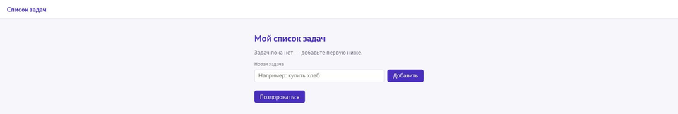
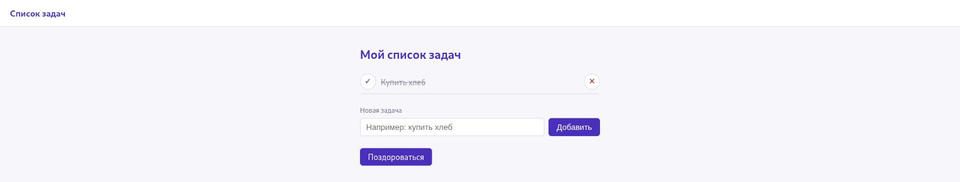

Flask и SQLite: сохраняем данные в базе
Список Python из раздела 22.5 становится таблицей SQLite, которая переживает перезапуск.
Теперь список Python из раздела 22.5 заменяется базой данных SQLite. Схема простая — одна таблица:
CREATE TABLE IF NOT EXISTS tasks (
id INTEGER PRIMARY KEY,
title TEXT NOT NULL,
done INTEGER NOT NULL DEFAULT 0 CHECK (done IN (0, 1))
);CHECK (done IN (0, 1)) — дополнительное ограничение:
SQLite не даст записать в столбец done ничего, кроме 0 или 1,
даже если в коде приложения где-то закрадётся ошибка.
Одно подключение на запрос
Открывать соединение с базой на каждый маленький вызов — расточительно, а держать одно
общее соединение на всё приложение без осторожности — рискованно при параллельных
запросах. Flask предлагает удобное место для данных, которые должны жить ровно один
запрос, — объект g:
import sqlite3
from flask import Flask, g
app = Flask(__name__)
app.config["DATABASE"] = "zadachi.db"
def get_db():
if "db" not in g:
g.db = sqlite3.connect(app.config["DATABASE"])
g.db.row_factory = sqlite3.Row
return g.db
@app.teardown_appcontext
def close_db(exception=None):
db = g.pop("db", None)
if db is not None:
db.close()g хранит данные в рамках контекста приложения Flask. При обычной обработке HTTP-запроса этот контекст живёт ровно с начала обработки запроса до его конца и создаётся заново для каждого следующего запроса — поэтому на практике g ведёт себя как хранилище на один запрос, а не как общая переменная, из которой данные могут случайно «утечь» в другой запрос. teardown_appcontext вызывается при закрытии контекста приложения, даже если обработчик завершился с ошибкой, — соединение всегда закрывается.Маршруты поверх базы данных
@app.route("/")
def glavnaya():
db = get_db()
zadachi = db.execute("SELECT id, title, done FROM tasks ORDER BY id").fetchall()
return render_template("index.html", zadachi=zadachi)
@app.route("/dobavit", methods=["POST"])
def dobavit():
title = clean_title(request.form.get("zadacha", ""))
if title is None:
flash("Название задачи не может быть пустым и не длиннее 200 символов.")
return redirect(url_for("glavnaya"), code=303)
db = get_db()
db.execute("INSERT INTO tasks (title) VALUES (?)", (title,))
db.commit()
return redirect(url_for("glavnaya"), code=303)Обратите внимание: ? в SQL-запросе и значение отдельным
аргументом — тот же параметризованный запрос из раздела 22.22, теперь внутри рабочего
приложения. flash(...) сохраняет сообщение, которое покажется
на следующей странице после редиректа — как именно это устроено, показывает следующий
раздел, 22.30. clean_title(...) — простая функция проверки из
раздела 22.31: пустое или слишком длинное название отклоняется ещё до обращения к базе.


Полный рабочий файл — со всеми маршрутами, обработкой ошибок и API — лежит здесь:
projects/flask/todo-app/app.py
python app.py, добавьте пару задач, остановите процесс (Ctrl+C) и запустите заново. Список останется тем же самым — именно то, чего не хватало версии из раздела 22.5.